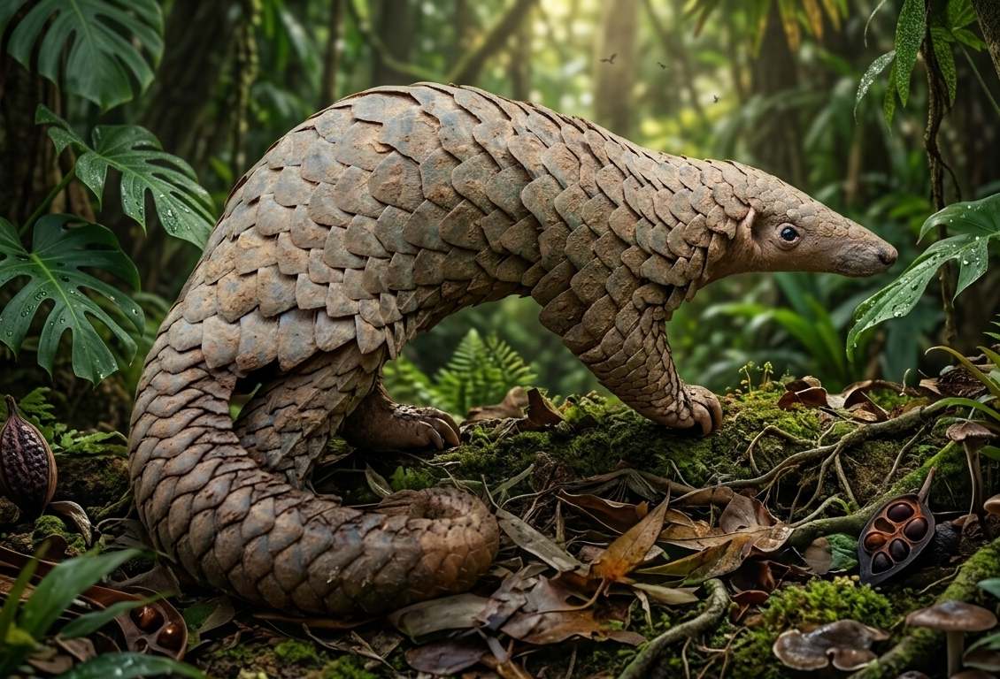

Philippine Mammals
Warm Blood of the Islands
167 native species, 102 endemic — from the world's smallest primate to giant cloud rats of the Luzon highlands.
Philippine Mammals
167 native species, 102 endemic — from the world's smallest primate to giant cloud rats of the Luzon highlands.
One of the world's smallest primates — each eye is larger than its brain. A nocturnal insectivore of the Philippine forest floor, the Tarsier communicates in ultrasonic frequencies inaudible to humans. Found in Bohol, Samar, and Mindanao.
The Collection
Twenty-four species — primates, bats, deer, rodents, bovids, and colugos — representing the extraordinary mammal diversity of the Philippine archipelago.
One of the world's smallest primates — each eye is larger than its brain and fixed in its skull. A nocturnal insectivore of Bohol, Samar, and Mindanao.
Near Threatened
A small, solitary buffalo found only on the island of Mindoro. Once ranged widely, now confined to Mount Iglit-Baco. Fewer than 600 survive.
Critically Endangered
The most trafficked mammal on Earth. The Philippine Pangolin is found on Palawan and surrounding islands. Its scales are in high demand in illegal wildlife trade.
Critically Endangered
Endemic to the Visayan islands, the Visayan Warty Pig is one of the world's rarest pigs. Habitat loss and hunting have reduced it to tiny forest fragments.
Critically Endangered
Also called the Binturong, this cat-bear-like creature is the heaviest member of the civet family. Its prehensile tail and popcorn-like scent make it one of Palawan's most unusual residents.
Vulnerable
The world's largest bat — wingspan up to 1.7 metres. Found only in the Philippines, this massive fruit bat is a critical forest regenerator, dispersing seeds across vast distances each night.
Endangered
One of the world's rarest deer, endemic to the Visayan islands. Found only in fragments of remaining forest on Panay and Negros, it is critically threatened by habitat loss and hunting.
Endangered
The most widespread large native mammal in the Philippines. Found across multiple island groups from lowland forests to highland grasslands, it plays an important role as a prey species and seed disperser.
Vulnerable
Once thought extinct, this large cave-roosting fruit bat was rediscovered on Cebu and Negros. A critical pollinator and seed disperser of Philippine forests, its colonies have been decimated by hunting and cave disturbance.
Critically Endangered
A native wild pig found across Luzon, Mindanao, and surrounding islands. More widely distributed than its Visayan cousin, it inhabits forests from sea level to the mountains and plays a key role in forest seed dispersal.
Vulnerable
A peculiar nocturnal mammal endemic to Palawan — more closely related to skunks than true badgers. It forages the forest floor at night, using its powerful claws to dig for invertebrates and roots.
Least Concern
Found only on the Calamian Islands of Palawan — one of the world's most restricted-range deer. Its spotted coat and compact build make it unlike any other Philippine deer species.
Endangered
A large, bushy-tailed arboreal rodent found only on Dinagat Island off the northeastern coast of Mindanao. One of the most geographically restricted mammals in the Philippines, it clings to survival in the island's last forest fragments under severe pressure from mining and deforestation.
Critically Endangered
The world's smallest hoofed mammal — found only on Balabac Island and nearby islets of Palawan. This ancient, fanged herbivore is a living relic of a lineage that predates true deer by millions of years.
Endangered
A Critically Endangered moonrat found only on Dinagat Island in Mindanao — one of the most range-restricted mammals on Earth. A close relative of the Mindanao Gymnure, it inhabits the island's last remaining forest fragments and faces extinction from mining and deforestation.
Critically Endangered
A small, frenetic insectivore endemic to the forests of Mindanao. One of several shrew species unique to the Philippine archipelago, it hunts insects, worms, and invertebrates through the forest leaf litter almost without rest, driven by one of the highest metabolic rates in the animal kingdom.
Vulnerable
A large, arboreal rodent found only in the remaining forests of Panay. Described by science only in 1996, its ecology remains poorly studied — it is threatened by the rapid deforestation of the Visayan islands.
EndangeredA nocturnal, tree-climbing omnivore endemic to the Philippines — known locally as the musang. Found from Batanes to Tawi-Tawi across forest edges and secondary growth, it is also the source of Kape Alamid — one of the world's most prized and unusual coffees.
Least ConcernA small, ancient insectivore endemic to the highland mossy forests of Mindanao — one of only two gymnure species in the Philippines. Its lineage predates many modern mammal groups, making it one of the most evolutionarily significant of the Philippines' endemic mammals.
EndangeredThe Philippines' only native wild cat — a small, spotted felid found in the remaining forests of Negros, Cebu, Panay, and Palawan. Resembling a miniature leopard, it hunts birds, lizards, and small mammals at night, and is severely threatened by deforestation across the Visayan islands.
Vulnerable
The world's most capable gliding mammal — endemic to the Philippines. Its webbed membrane spans from neck to tail tip, allowing it to glide silently between trees over 100 metres. Paradoxically, it is the closest living relative of primates, more closely related to monkeys and apes than to any other mammal.
Least ConcernA small, spiny rodent endemic to Palawan and several nearby islands — among the smallest porcupines in the world. It forages the forest floor at night for roots, bulbs, and fallen fruit, using its formidable quills as a defence against Philippine forest predators.
Vulnerable
A Critically Endangered fruit bat endemic to the Philippines, recognisable by its bizarre forward-pointing tubular nostrils. Found in old-growth forests of Negros and Cebu — islands that have lost over 98% of their original forest cover, leaving this bat clinging to survival in tiny fragments.
Critically EndangeredA tiny, frenetic insectivore endemic to Palawan — an island whose unique geology and Bornean biological connections make it a world apart from the rest of the Philippine archipelago. Like all shrews, it must eat nearly constantly to fuel one of the fastest metabolisms in the mammal world.
VulnerableConservation
The Philippines has lost over 70% of its original forest cover. Every species documented here depends on urgent collective action.
Click any card to view full details.